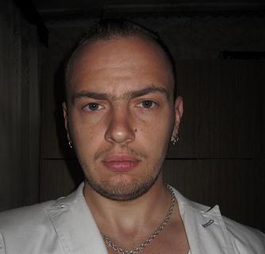

About me
I'm 29 years old.
I learn to program in JS for about a year. I like exactly the frontend, because I love to contemplate my result and I like how dynamically this direction is developing. My goals are to achieve an appropriate level of knowledge and gain practical experience in commercial development, allowing me to find a job in this area. I'm constantly engaged in self-development and self-education, in addition to this I continue to receive an academic education. I love to learn, easily learn new information. It's important for me to teach the right direction of my development in this industry from people with a lot of practical experience, competent advice and feedback on my work, counter-criticism to my address. My life motto is constant development and self-education. I constantly read manuals and special literature on programming, watch video tutorials, independently try to understand technologies. I assimilate information quickly. I'd like to wish myself and you development and the fastest possible achievement of the set goals.
There is experience in writing course projects in programming, laboratory work, experience in performing assignments of the previous set of school rolling scopes 2018Q1 up to and including stage 3.
Courses on the Internet, video courses, books, documentation, forums, articles ...
My level is pre intermediate. English began to learn 10 months ago from the beginnin gin English school, before that I did not learn anything at all - French was a foreign language. Now I continue to study it in this school constantly, without interruption, on an individual basis.